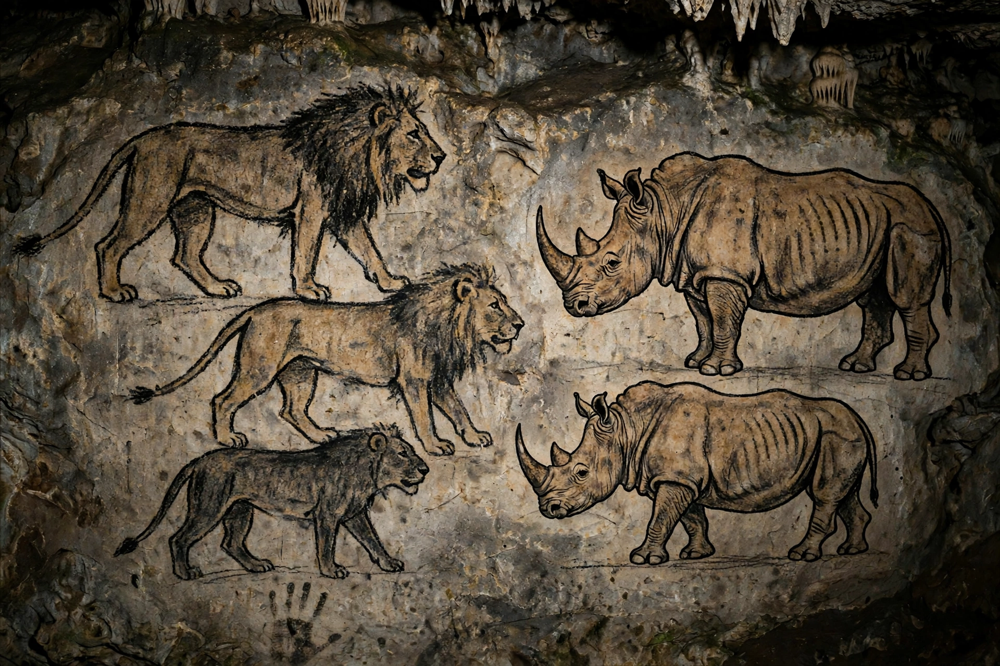

| Location | Ardeche, southern France |
|---|---|
| Discovered | 18 December 1994 |
| Age of art | About 36,000 years (two phases) |
| UNESCO | World Heritage Site, 2014 |
The Chauvet Cave (Chauvet-Pont-d'Arc) in the Ardeche valley contains some of the earliest and best-preserved figurative cave paintings known.
Discovery
Jean-Marie Chauvet, Eliette Brunel and Christian Hillaire discovered the sealed cave in 1994. Because the entrance had collapsed millennia earlier, paintings, engravings, animal bones and hearths survived undisturbed.
Art
Hundreds of images depict lions, mammoths, rhinoceroses, horses, bison and aurochs, often in dynamic groups using shading and perspective, alongside hand stencils and abstract signs. Radiocarbon dates suggest two occupations, around 37,000-33,500 and 31,000-28,000 years ago.
Preservation
The cave is closed to the public; a full-scale replica, the Caverne du Pont-d'Arc, opened nearby in 2015. Werner Herzog's film Cave of Forgotten Dreams (2010) brought it worldwide attention.